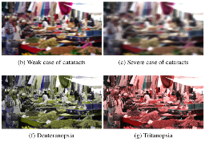

A Framework for Pervasive Visual Deficiency Simulation

VR (2019)
Authors
Christoph Schulz, Nils Rodrigues, Marco Amann, Daniel Baumgartner, Arman Mielke, Christian Baumann, Michael Sedlmair, Daniel Weiskopf
Materials
Abstract
We present a framework for rapid prototyping of pervasive visual deficiency simulation in the context of graphical interfaces, virtual reality, and augmented reality. Our framework facilitates the emulation of various visual deficiencies for a wide range of applications, which allows users with normal vision to experience combinations of conditions such as myopia, hyperopia, presbyopia, cataract, nyctalopia, protanopia, deuteranopia, tritanopia, and achromatopsia. Our framework provides an infrastructure to encourage researchers to evaluate visualization and other display techniques regarding visual deficiencies, and opens up the field of visual disease simulation to a broader audience. The benefits of our framework are easy integration, configuration, fast prototyping, and portability to new emerging hardware. To demonstrate the applicability of our framework, we showcase a desktop application and an Android application that transform commodity hardware into glasses for visual deficiency simulation. We expect that this work promotes a greater understanding of visual impairments, leads to better product design for the visually impaired, and forms a basis for research to compensate for these impairments as everyday help.